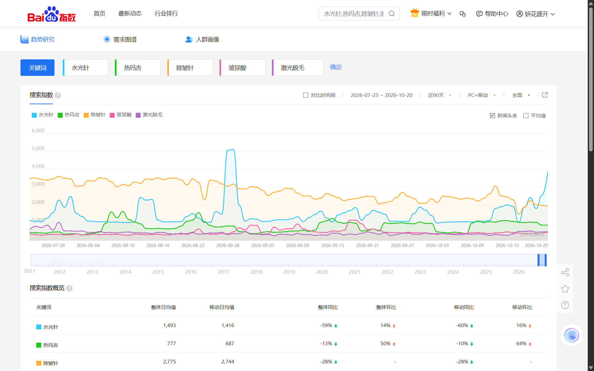
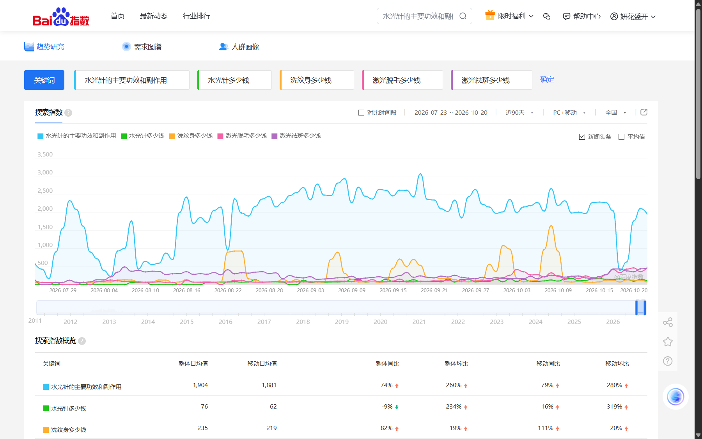

주요 시술·일반어
30일 전체 일평균 검색지수 · 오른쪽은 직전 30일 대비입니다.
선정한 일반어 10개 비교이며 전체 시장 순위가 아닙니다. 除皱针은 주름 개선 주사 일반어입니다. 玻尿酸·外泌体에는 시술 외 관심이 포함될 수 있습니다.확인된 주요 사실
일반어 가운데 높은 지수가 확인됐습니다. 물광주사의 ‘효과와 부작용’ 질문은 별도로 2,043입니다.
90일 일평균은 777이며, 직전 90일 대비 +50%입니다. 두 기간 모두 증가 표시가 확인됐습니다.
레이저 제모 비용은 246 / +172%, ‘대략 얼마’ 표현은 104 / -31%입니다. 유사 검색어를 합산하지 않습니다.
16개 중 韩国整形 10, 韩国玻尿酸 0 표시, 나머지 14개 미수록입니다. 방한 수요 순위는 산정할 수 없습니다.
롱테일: 가격·효과·부작용·횟수 질문
롱테일은 ‘시술명 + 구체적인 질문’ 형태의 검색어입니다. 같은 주제라도 정확한 표현별로 수록 여부와 지수가 달랐습니다.
효과·부작용 질문
유지기간·간격·횟수
비교·사후관리·공식 확인
공식 메뉴와 검색어 대응
공식 중국어 홈페이지의 메뉴·표기를 기준으로 조사했습니다. 아래 링크는 홈페이지에 표시된 항목의 주소입니다. 유사 일반어는 특정 제품과 동일하다는 의미가 아닙니다.
| 병원 메뉴 / 대응 주제 | 홈페이지 중국어 표기·URL | 조사한 정확한 표현 / 30일 결과 |
|---|---|---|
| 물광주사 | 水光针 | 水光针 수치 확인 · 1,515 |
| 리쥬란 | 丽珠兰 | 丽珠兰 미수록 rejuran 미수록 |
| 쥬베룩 | Juvelook / 乔雅露 | juvelook 미수록 乔雅露 미수록 |
| 스컬트라 | Sculptra / 塑妍萃 | sculptra 미수록 塑妍萃 미수록 |
| 고우리 | GOURI | gouri 미수록 |
| 레디어스 | 微晶瓷 Radiesse | radiesse 미수록 微晶瓷 0 표시 · 0 |
| 엑소좀 | 外泌体 | 外泌体 수치 확인 · 295 外泌体水光针 미수록 |
| 리투오 | Elravie Re2O / 艾莉薇 RE2O | re2o 미수록 艾莉薇 미수록 |
| 하이로웨이브 | HILO WAVE | hilo wave 미수록 |
| 스킨바이브 | Skinvive水光针 | skinvive 미수록 |
| PDRN | PDRN 三文鱼 | pdrn 미수록 三文鱼针 미수록 |
| 울트라콜 | Ultracol | ultracol 미수록 |
| 리즈네 | 利兹内 | 利兹内 미수록 |
| 필로가 | 菲洛嘉 | 菲洛嘉 미수록 |
| 셀레드엠 | CellREDM / 赛帝妍 | 赛帝妍 미수록 |
| 써마지 | 热玛吉 FLX | 热玛吉 수치 확인 · 875 热玛吉flx 미수록 |
| 울쎄라 프라임 | Ultherapy Prime 超声刀 | ultherapy 미수록 ultherapy prime 미수록 美版超声刀 수치 확인 · 46 超声刀二代 미수록 |
| 소프웨이브 | Sofwave提升 / 索夫波 | sofwave 미수록 sofwave提升 미수록 索夫波 미수록 |
| 온다 | Onda提升 / 冷波拉提 | onda 수치 확인 · 189 해석 보류 onda提升 미수록 冷波拉提 미수록 |
| 인모드 | InMode | inmode 미수록 |
| 슈링크 계열 | 韩版超声刀 宇宙版 | 韩版超声刀 미수록 |
| 볼뉴머 | Volnewmer 黄金V塑 | volnewmer 미수록 黄金v塑 미수록 |
| 덴서티 | Density | density 수치 확인 · 574 해석 보류 |
| 리니어지 | LinearZ | linearz 미수록 |
| 세르프 | XERF | xerf 미수록 |
| 올타이트 | Alltite | alltite 미수록 |
| 포트라 콰트로 | Fortra Quattro | fortra quattro 미수록 |
| 실리프팅 | 线雕拉提 | 线雕 수치 확인 · 131 线雕提升 미수록 |
| 유지인대 리프팅 | 韧带提升 | 韧带提升 미수록 |
| 보툴리눔 톡신 | 肉毒素 | 肉毒素 수치 확인 · 293 瘦脸针 수치 확인 · 164 除皱针 수치 확인 · 2,276 |
| 코어톡스 | Coretox | coretox 미수록 |
| 제오민 | Xeomin / 德国西马 | xeomin 미수록 |
| 히알루론산 필러 | 玻尿酸 | 玻尿酸 수치 확인 · 427 玻尿酸填充 수치 확인 · 117 |
| 어깨 필러 | 肩部填充 | 肩部填充 미수록 |
| 필러 용해 | 玻尿酸溶解注射 | 玻尿酸溶解酶 미수록 |
| 포텐자 관련 일반어 | 黄金微针 | 黄金微针 미수록 potenza 미수록 |
| 피코 레이저 | 蜂巢皮秒激光 | 皮秒 미수록 蜂巢皮秒 미수록 picosure 미수록 |
| 문신 제거 | 洗纹身 | 洗纹身 수치 확인 · 186 |
| 여드름 레이저 | Accu祛痘激光 | 祛痘 수치 확인 · 245 |
| 점 제거 | 去痣 | 去痣 수치 확인 · 134 |
| 아그네스 | AGNES 微针射频 | agnes 수치 확인 · 510 해석 보류 |
| 여성 레이저 제모 | 女士激光脱毛 | 激光脱毛 수치 확인 · 387 |
| 남성 레이저 제모 | 男士激光脱毛 | 男性激光脱毛 미수록 |
| 바디 보톡스 | 身体肉毒素 | 瘦腿针 수치 확인 · 365 瘦肩针 미수록 |
| 지방분해주사 | 溶脂针（CA成分） | 溶脂针 수치 확인 · 126 |
| 다한증 | 多汗症肉毒素 | 多汗症肉毒素 미수록 |
| LDM | LDM | ldm 미수록 |
| 골드 PTT | 黄金PTT | 黄金ptt 미수록 |
| 아쿠아필 | Aqua Peel | aqua peel 미수록 |
| 라라필 | Lhala Peel | lhala peel 미수록 |
주요 10개 검색어: 30일과 90일
30일은 2026.09.21~10.20, 90일은 2026.07.23~10.20입니다. 두 기간은 겹칩니다. 30일 증감은 직전 30일, 90일 증감은 직전 90일과 비교한 화면 표시값입니다.
| 검색어 / 의미 | 30일 일평균 | 직전 30일 대비 | 90일 일평균 | 직전 90일 대비 | 근거 |
|---|---|---|---|---|---|
| 水光针물광주사 | 1,515 | -4% | 1,493 | +14% | 90일 기록 |
| 热玛吉써마지 | 875 | +24% | 777 | +50% | 90일 기록 |
| 除皱针주름 개선 주사 | 2,276 | -15% | 2,775 | 미표시 | 90일 기록 |
| 玻尿酸히알루론산 | 427 | -30% | 466 | +20% | 90일 기록 |
| 激光脱毛레이저 제모 | 387 | +4% | 423 | -18% | 90일 기록 |
| 水光针的主要功效和副作用물광주사의 주요 효과와 부작용 | 2,043 | -16% | 1,904 | +260% | 90일 기록 |
| 水光针多少钱물광주사 비용 | 124 | +45% | 76 | +234% | 90일 기록 |
| 洗纹身多少钱문신 제거 비용 | 298 | +11% | 235 | +19% | 90일 기록 |
| 激光脱毛多少钱레이저 제모 비용 | 246 | +172% | 133 | +39% | 90일 기록 |
| 激光祛斑多少钱레이저 색소 제거 비용 | 246 | +7% | 239 | +176% | 90일 기록 |
일평균 지수의 기간 비교
바이두의 90일 원본 그래프
아래 캡처 상단의 ‘搜索指数’가 본 보고서의 기준입니다. 화면 하단 ‘资讯指数’는 별도 뉴스·정보 지수이며, 그 기간도 별도로 표시됩니다.


연관검색: 주간 화면에서 확인한 표현
수요도표(需求图谱)의 기준 주간은 2026.10.12~10.18입니다. 30일 지수와 기간이 다릅니다. 아래는 화면 순위에서 의료미용과 관련 있는 표현만 선별한 목록입니다.
| 중심 검색어 | 화면에서 확인한 관련어 | 분류 / 근거 |
|---|---|---|
| 水光针 · 물광주사 | 水光针的主要功效和副作用 热玛吉 · 医美 · 光子嫩肤 医院光子嫩肤价格 · 玻尿酸 | 효과·부작용, 다른 시술, 병원 가격 원문 전체 |
| 热玛吉 · 써마지 | 열도: 水光针 · 超声炮 · 韩国签证 변화율: 热玛吉多少钱 · 热玛吉多少钱做一次 · 热玛吉官网 | 시술·가격·공식 정보 원문 전체 |
| 激光脱毛 · 레이저 제모 | 激光脱毛多少钱 · 激光脱毛大概多少钱 医疗整形美容 · 脱毛膏 | 가격·대체 제품 원문 전체 |
추가 조회한 연관시장 표현
光子嫩肤 관련 2개는 연관시장 비교용입니다. 병원에서 이 이름의 시술을 제공한다는 확인 자료로 사용하지 않습니다. 医院光子嫩肤价格의 전년동기 대비 12,374%는 화면 원문대로 원자료에 보존했으며, 비교 기저를 확인하지 못해 주요 증가 결론에서 제외했습니다.전체 150개 검색어 원자료
정확한 중국어·영문 입력, 한국어 의미, 분야, 상태를 함께 표시합니다. 빈 수치는 0으로 대체하지 않았습니다.
| 검색어 / 의미 | 분야 / 의도 | 확인 상태 | 전체 일평균 | 모바일 일평균 | 직전 30일 대비 | 전년동기 대비 | 비고 / 출처 |
|---|
지수의 합계를 전체 시장 규모로 사용하지 않으며, 미수록 검색어를 수요 0으로 처리하지 않습니다.